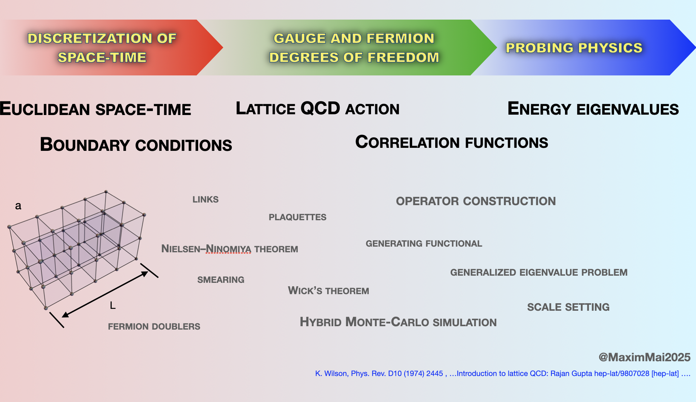

Maxim Mai
personal homepage
Without experimentalists, theorists tend to drift, without theorists experimentalists tend to falter.
The overarching focus of my research lies in properties of strongly interacting matter. Specifically, I am interested in properties of excited states of matter, short-lived excitations of hadrons such as protons, pions etc.. My main research goal lies in building a "tridge" (three-sided bridge) between (1) theoretical methods based on symmetries of the strong interaction interaction, (2) phenomenology and application to experimental observations and (3) results of numerical ab-initio calculations of Lattice QCD.
If you want to know more see the sources below. They are ordered with respect to the desired level of details:
 One of the currently best ways to access QCD at low energies while taking into account its non-perturbative nature is the lattice gauge theory. In the nutshell it is based on the discretization of the 4D-spacetime by an Euclidean 4D discrete lattice in a finite volume. Quarks are allowed to live only on the intersections of the lattice sites while gluons are associated with the links between the intersections. Through a series of well-defined steps (see fig. to the right for an excerpt) physical information can be accessed in a numerical calculation performed in supercomputing facilities. For an introductory lecture on the techniques as well as historical details see, e.g., [LectureNotes].
I am interested in relating the results of lattice QCD to the phenomenological ones based on experimental observations. A central object of study hereby is the so-called quantization condition which relates real energy eigenvalues of a multi-particle system in a finite volume with complex-valued scattering amplitudes. Based on continuum Quantum Field Theory principles we have derived few years ago the Finite-Volume-Unitarity (FVU) approach which extends to up to three interacting particles. See figure to the left and [Review].